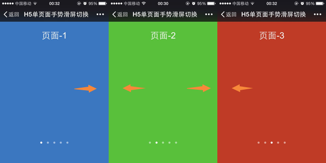

H5单页面手势滑屏切换是采用HTML5 触摸事件(Touch) 和 CSS3动画(Transform,Transition)来实现的，效果图如下所示，本文简单说一下其实现原理和主要思路。

1、实现原理
假设有5个页面，每个页面占屏幕100%宽，则创建一个DIV容器viewport，将其宽度(width) 设置为500%，然后将5个页面装入容器中，并让这5个页面平分整个容器，最后将容器的默认位置设置为0,overflow设置为hidden,这样屏幕就默认显示第一个页面。
1 2 3 4 5 6 7 8 9 10 11 12 13 14 15 16 17 | <div id="viewport" class="viewport"> <div class="pageview" style="background: #3b76c0" > <h3 >页面-1</h3> </div> <div class="pageview" style="background: #58c03b;"> <h3>页面-2</h3> </div> <div class="pageview" style="background: #c03b25;"> <h3>页面-3</h3> </div> <div class="pageview" style="background: #e0a718;"> <h3>页面-4</h3> </div> <div class="pageview" style="background: #c03eac;"> <h3>页面-5</h3> </div></div> |
CSS样式：
1 2 3 4 5 6 7 8 9 10 | .viewport{ width: 500%; height: 100%; display: -webkit-box; overflow: hidden; pointer-events: none; -webkit-transform: translate3d(0,0,0); backface-visibility: hidden; position: relative;} |
注册touchstart,touchmove和touchend事件，当手指在屏幕上滑动时,使用CSS3的transform来实时设置viewport的位置，比如要显示第二个页面，就设置viewport的transform:translate3d(100%,0,0) 即可， 在这里我们使用translate3d来代替translateX，translate3d可以主动开启手机GPU加速渲染，页面滑动更流畅。
2、主要思路
从手指放在屏幕上、滑动操作、再到离开屏幕是一个完整的操作过程，对应的操作会触发如下事件：
手指放在屏幕上：ontouchstart
手指在屏幕上滑动：ontouchmove
手指离开屏幕：ontouchend
我们需要捕获触摸事件的这三个阶段来完成页面的滑动：
ontouchstart: 初始化变量, 记录手指所在的位置,记录当前时间
1 2 3 4 5 6 7 8 9 10 11 | /*手指放在屏幕上*/document.addEventListener("touchstart",function(e){ e.preventDefault(); var touch = e.touches[0]; startX = touch.pageX; startY = touch.pageY; initialPos = currentPosition; //本次滑动前的初始位置 viewport.style.webkitTransition = ""; //取消动画效果 startT = new Date().getTime(); //记录手指按下的开始时间 isMove = false; //是否产生滑动}.bind(this),false); |
ontouchmove: 获得当前所在位置，计算手指在屏幕上的移动差量deltaX,然后使页面跟随移动
1 2 3 4 5 6 7 8 9 10 11 12 13 14 15 16 17 18 19 | /*手指在屏幕上滑动，页面跟随手指移动*/document.addEventListener("touchmove",function(e){ e.preventDefault(); var touch = e.touches[0]; var deltaX = touch.pageX - startX; var deltaY = touch.pageY - startY; //如果X方向上的位移大于Y方向，则认为是左右滑动 if (Math.abs(deltaX) > Math.abs(deltaY)){ moveLength = deltaX; var translate = initialPos + deltaX; //当前需要移动到的位置 //如果translate>0 或 < maxWidth,则表示页面超出边界 if (translate <=0 && translate >= maxWidth){ //移动页面 this.transform.call(viewport,translate); isMove = true; } direction = deltaX>0?"right":"left"; //判断手指滑动的方向 }}.bind(this),false); |
ontouchend:手指离开屏幕时，计算屏幕最终停留在哪一页。首先计算手指在屏幕上的停留时间deltaT,如果deltaT<300ms，则认为是快速滑动，相反则是慢速滑动，快速滑动和慢速滑动的处理是不同的：
(1)如果是快速滑动，则让当前页面完整的停留在屏幕中央(需要计算当前页面还有多少需要滑动)
(2)如果是慢速滑动，还需要判断手指在屏幕上滑动的距离，如果滑动的距离没有超过屏幕宽度50%，则要回退到上一页，相反则要停留在当前页面
1 2 3 4 5 6 7 8 9 10 11 12 13 14 15 16 17 18 19 20 21 22 23 24 25 26 27 28 29 30 31 | /*手指离开屏幕时，计算最终需要停留在哪一页*/document.addEventListener("touchend",function(e){ e.preventDefault(); var translate = 0; //计算手指在屏幕上停留的时间 var deltaT = new Date().getTime() - startT; if (isMove){ //发生了左右滑动 //使用动画过渡让页面滑动到最终的位置 viewport.style.webkitTransition = "0.3s ease -webkit-transform"; if(deltaT < 300){ //如果停留时间小于300ms,则认为是快速滑动，无论滑动距离是多少，都停留到下一页 translate = direction == 'left'? currentPosition-(pageWidth+moveLength):currentPosition+pageWidth-moveLength; //如果最终位置超过边界位置，则停留在边界位置 translate = translate > 0 ? 0 : translate; //左边界 translate = translate < maxWidth ? maxWidth : translate; //右边界 }else { //如果滑动距离小于屏幕的50%，则退回到上一页 if (Math.abs(moveLength)/pageWidth < 0.5){ translate = currentPosition-moveLength; }else{ //如果滑动距离大于屏幕的50%，则滑动到下一页 translate = direction == 'left'? currentPosition-(pageWidth+moveLength):currentPosition+pageWidth-moveLength; translate = translate > 0 ? 0 : translate; translate = translate < maxWidth ? maxWidth : translate; } } //执行滑动，让页面完整的显示到屏幕上 this.transform.call(viewport,translate); }}.bind(this),false); |
除此之外，还要计算当前页面是第几页，并设置当前页码
1 2 3 4 5 6 7 | //计算当前的页码pageNow = Math.round(Math.abs(translate) / pageWidth) + 1;setTimeout(function(){ //设置页码，DOM操作需要放到子线程中，否则会出现卡顿 this.setPageNow();}.bind(this),100); |
基本的思路就这些，当然在实际操作过程中还有一些细节需要注意，这里就不详细说了，都在代码里能体现出来，源代码已传至Git：https://github.com/git-onepixel/guesture, 有兴趣的同学欢迎一起讨论。


最新评论